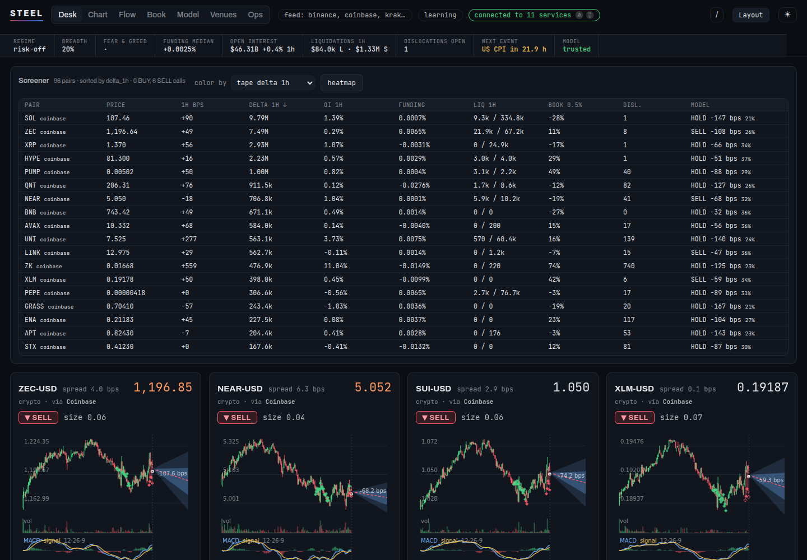
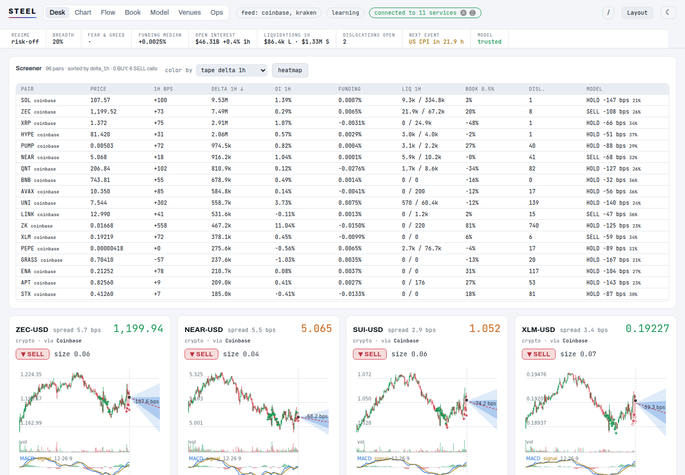
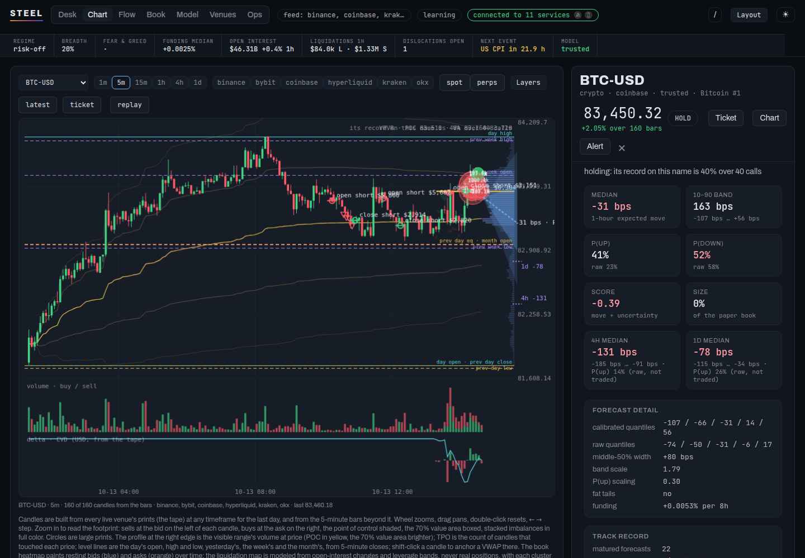
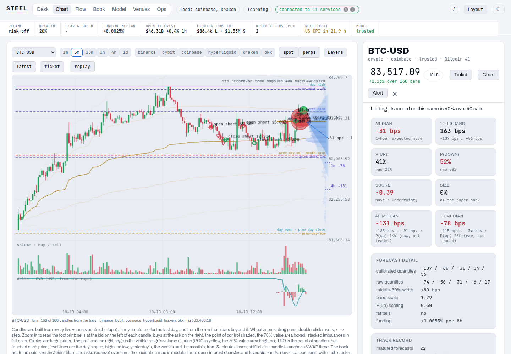
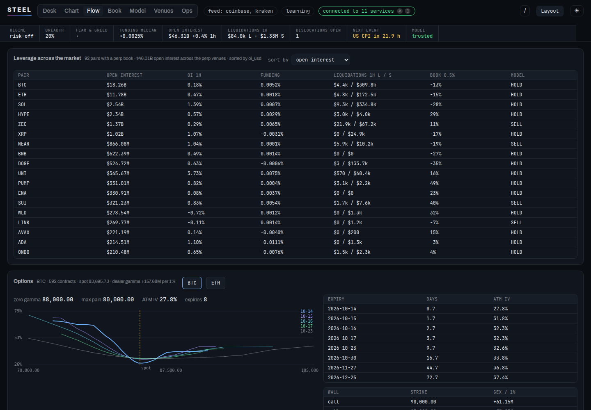
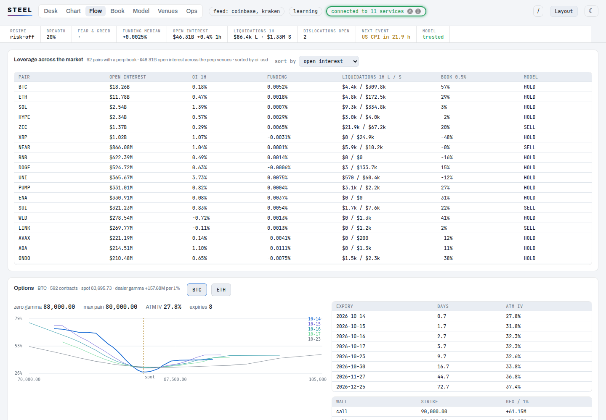
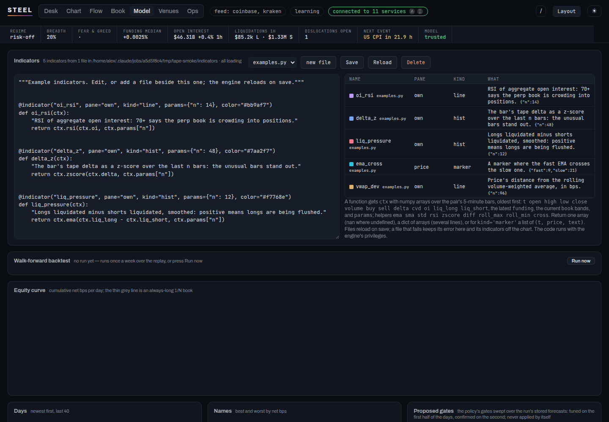
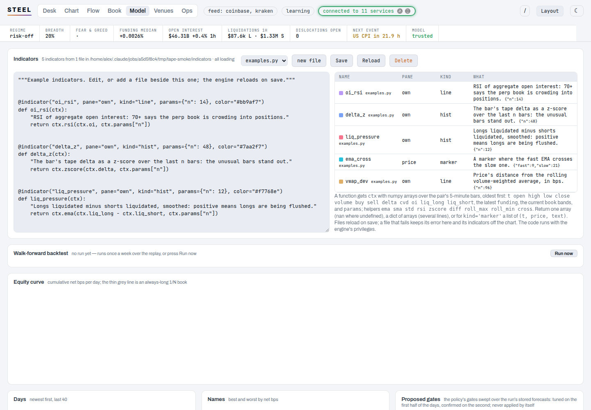

Steel is a crypto market model that runs on your own box. It listens to every venue's prints and books around the clock, forecasts each pair's next hour as a distribution, learns as those forecasts resolve, and pays every real cost when it trades on paper. Every map it draws says how it was made.
A crypto session is a routine run before the hour and repeated through the day: the clock, the funding sweep, open interest, the liquidation map, the flow, the levels, and who is positioned where. Steel's views follow that order, and the strip at the top of every view is the routine's numbers.
Regime, breadth, the funding median across pairs, open interest and liquidations on four perp venues, dislocations open, the next scheduled event, and whether the model is trusted. Under it, every pair by every stored series, as a table or a heatmap, and the model's live calls with their reasons.
from /api/screener and /api/calendar, every 15 s


Candles at any timeframe from the tape, the footprint, the volume profile, the book heatmap and the modeled liquidation map, net positioning, GEX, levels, your own indicators in Python, the model's calls and its forecast fan. The pair's tape, book, derivatives and options sit beside the chart; the order ticket docks with draggable rays.
from /api/candles, /api/footprint, /api/book, /api/derivs, /api/options


Open interest and its change, funding and liquidations per pair across Binance, Bybit, OKX and Hyperliquid, Deribit's options surface with the smile and the term structure, Polymarket's crypto markets, and what the crowd overlay reads.
from four perp feeds, Deribit and Polymarket, no keys


A held-out scorecard, calibration by pair, the drift of every feature and the net's weight on it, the weekly walk-forward backtest and the policy sweep. The indicator editor lives here too: a file in Python, reloaded on save, drawn on the chart.
from the replay and the scorecard; nothing here changes a forecast


Four rules, each a line in the code and a test in the suite.
The liquidation map is modeled from open-interest changes and leverage bands, never real positions, and it scores itself against the venues' real liquidations. The book heatmap says what rested, not what would fill.
The paper book pays the venue's taker fee, the half-spread, funding by side, impact, and the on-chain transfer's fee and wait when money has to move between venues. A short is an isolated-margin perp: the margin is the most it can lose.
Balance readers go through one gate that refuses any path they did not declare, and the tests grep every path for order, withdrawal and transfer words. The vault seals every key at rest.
Orders exist in one package behind a gate: execution off by default, a venue trades only when armed with its own trade key, every cap set, dry run on, and the kill switch refuses everything. Promotion from paper to live is the operator's, never the code's.
The order-flow terminals (Market Monkey, Bookmap, TradingLite, aggr) and the derivatives dashboards (Coinglass, Velo, Laevitas) are good at what they show. Steel has most of the same views, and three things they do not.
| What | The terminals | Steel |
|---|---|---|
| Multi-venue tape, footprint, CVD by size band | yes | yes · six spot and perp venues, open source |
| Book and liquidation heatmaps | yes | yes · labelled modeled or measured, scored against real liquidations |
| Open interest, funding, liquidations, positioning | yes | yes · four perp venues, OI-confirmed net positioning |
| Options surface | some | yes · GEX by strike, smile, term, max pain, zero gamma |
| Scripting, workspaces, alerts, replay | yes | yes · Python indicators, widgets, series alerts, replay, a data API and an MCP server |
| A forecast with its own scorecard | no | a distribution per pair per hour, trusted only by a held-out record |
| A paper book that pays every cost | no | fees, spread, funding, impact, on-chain transfers and their waits |
| Runs on your box, keys read-only, never trades unless armed | hosted | yes |
Python 3.11 or newer and uv. Market data needs no key; the optional exchange keys are pasted in on the Venues tab and should be read-only.
git clone git@github.com:thingg-co/steel.git cd steel uv sync uv run steel # http://127.0.0.1:8100 uv run steel token # the operator token the dashboard asks for
The first start pages 30 days of history from the spot venues and warms the net up before it forecasts. A GPU helps; a CPU runs the smaller presets.
For other programs, the same box serves a versioned data API and an MCP server: every store Steel keeps, reads only.
curl -H "Authorization: Bearer $TOKEN" \ localhost:8100/api/v1/candles/btc?tf=60&n=120 uv run steel mcp # Model Context Protocol on stdin/stdout
Every route and shape is in docs/api.md; the design behind the dashboard is in the redesign proposal; the system itself is in the whitepaper.